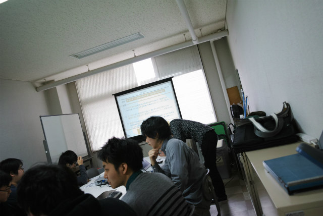

| ・修論発表リハーサル (H27.02.17) | |||
|
去年は3人でしたが今年は4人です。部屋のレイアウトが少し変わりましたが、何より早期配属された3回生が5人参加しています。M2の先輩としては、これがプレゼンというところを見せつけて欲しいものです。 |
|||
|
3回生にはテーマ選択の判断材料 |
5分前やけど間に合うの？ | ||
|
B4Tくんも |
F木のシャツがどう考えても | ||
|
解析して貰わんばかりの粒子パターン |
検出数1278個、真円度（0.8-1.0）、平均粒径206 pixel、 ImageJ ver.1.46 | ||
|
待ったのに白黒 |
Taskから | ||
|
3回が注目 |
3回生には優しくない説明 | ||
|
なんかスゴイ感は伝わる？ |
M1A井くんの質問 | ||
|
次は1278個なF木 |
そこそこ解るかも | ||
|

そこそこ解るかも |
見えないものは見えないという真理 | ||
|
ムー君 |
アイデアを理論でちゃんと説明して | ||
|
最後、K林 |
いろいろ議論あり | ||